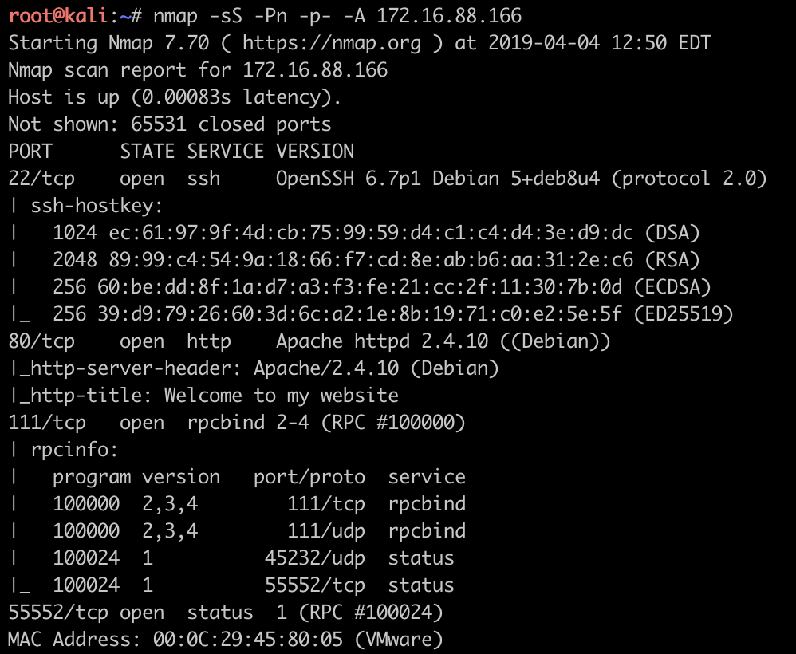
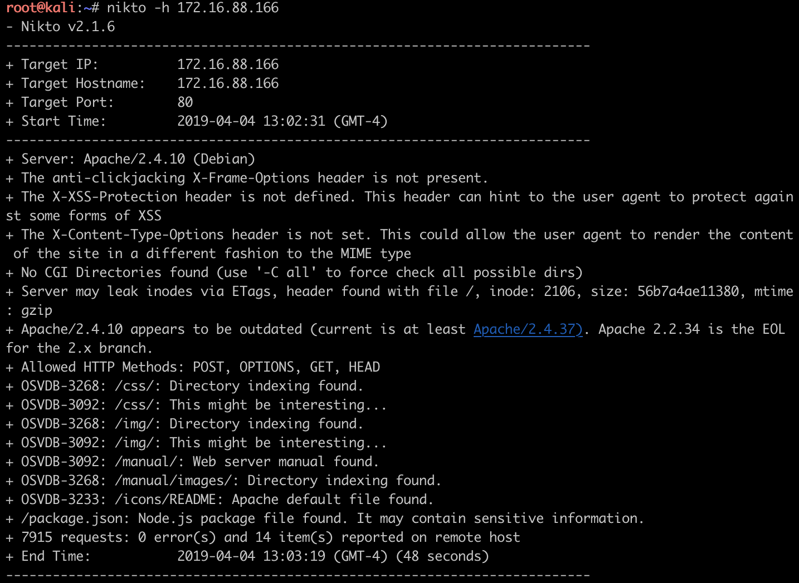

简介
此靶机尚未完成, 目前遇到了问题, 无法继续进行, 先做简要记录.
文章目录
- 端口扫描找方向
- 80端口出奇迹
- 参考链接
端口扫描找方向
1 | $ nmap -sS -Pn -p- -A 172.16.88.166 |

结果分析:
- Open SSH 6.7 无CVE, 考虑爆破
- Apache httpd 2.4.10 无CVE, 考虑apache后台、WEB站点漏洞挖掘
- 55552端口 rcp status 没有见过暂搁置
综合上述分析, 先从WEB入手继续收集信息
80端口出奇迹
1 | $ nikto -h 172.16.88.166 |

结果中有价值的地方是package.json, 该文件为node.js的配置文件, 包含项目依赖的模块和相关配置, 经过查证该项目为开源项目startbootstrap-new-age, 本地部署之后并没有发现有价值的信息;
1 | $ dirb http://172.16.88.166 -f |
爆破目录之后发现joomla目录, 于是将注意力放在joomla的渗透上.
1 | $ joomscan -u http://172.16.88.166/joomla -ec |
扫描结果信息:
- joomla 3.6.0
- 待验证的CVE漏洞CVE details
- 目录遍历:
joomla/administrator/components、joomla/administrator/modules、joomla/administrator/templates、joomla/images/banners - com组件
其中, 目录遍历有可能造成敏感文件泄漏, 优先考虑, 其他方向有待进一步检查.
经过一番折腾, 尚未找到明确思路, 由于暂时不关注joomla相关问题, 所以暂不进行代码审计方面的尝试.